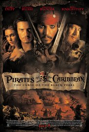

|
This movie about boy,whose nickname is Baby. He loves listeng to music since his childhood,when he lost his parents in/on the car crash. Starting from this he takes an
interest to the cars,fast driving and of course to the money. Baby
helps to the burglars run down from law becuase he made an error by way of stealing money from famous bussinesman,for what he is boot the bill. Later Baby(by accident)meets with girl for which he wants to bowl off/draw away from his such life which he have lived before Jane. Baby kills all of his partners,after this he takes Jane and they trying to run down from police,but they find them and arrests Baby for his mistakes that he did. After this Jane and Baby will be together forever
|
 |
Kingsman(the name of one the top secret agency in the world) one of the movies which I like best,in this movie you can understand that humanity never changes because of money and peoples who wants to do justice to oneself. Boy by name Chester King losts his father when he was at the stricly confidental task,after the death of his dad he gets/gots the medallion wich helps him to get out from the jail/prison because of joyriding his stepfathers best friend. Of course this medallion was not unusal because after this his life changes drastically,Chester becames one of the best agents in the history of the Kingsman,because he finds out that their CEO(boss)wants to kill all the mankind in the world for the reason that Valentine(bad hero in the movie)wants to regenerate all humanity/Earth. The reason that he thinks is that all the people for him are just the bacterias which don't alllows his/to his plans became true. As usual we can't do this without helping our friends,they save the Earth and the mankind and lives with his family without his stepfather |
 |
Very interesting movie where everythng starts on the Earth and ends in the Galaxy after 26 years. Peter who was the mainhero of the movie losts his mother in the hospital because of her illness,he runs out from the hospital wherethe aliens ship takes him away from Earth forever. After 26 years he becames where famous rubber and defendor of the Galaxy in the world. On the abandoned planet Morag, the soldiers of the Kree race could not defeat the carefree space pirate earthling who calls himself the Star Lord. He playfully takes from them from under his nose a valuable artifact, for the possession of which many of the opposing forces of the Galaxy are ready to compete. To emerge from the situation as a winner and prevent the hegemony of Evil, the Lord must unite with the initially aggressive strangers - Gamora, Rocket, Groot and Drax. |
|  |
The life of the charismatic adventurer, Captain Jack Sparrow, full of fascinating adventures, changes dramatically when his archenemy Captain Barbossa abducts Jacks ship, the Black Pearl, and then attacks Port Royal and steals the beautiful daughter of the governor, Elizabeth Swann. |